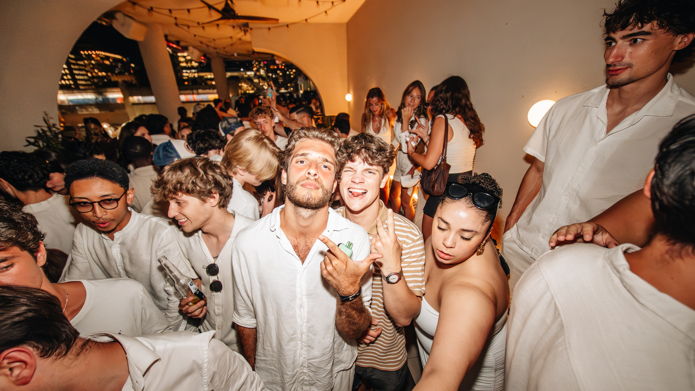
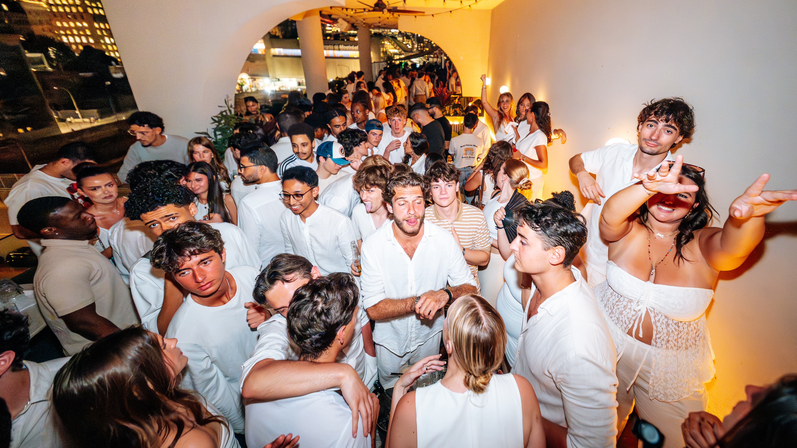
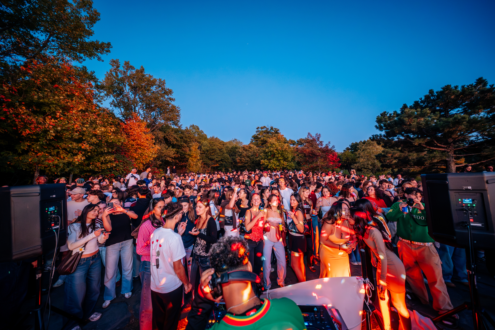
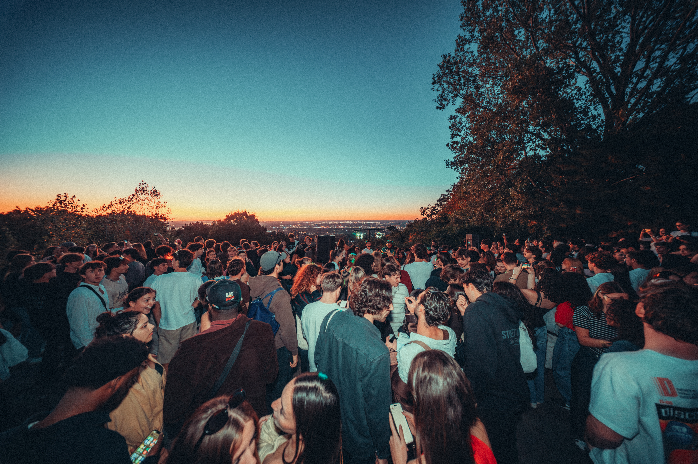
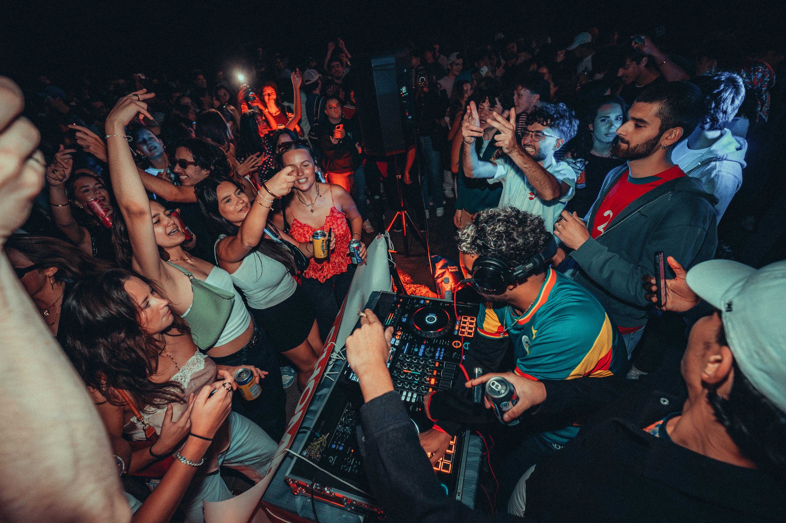
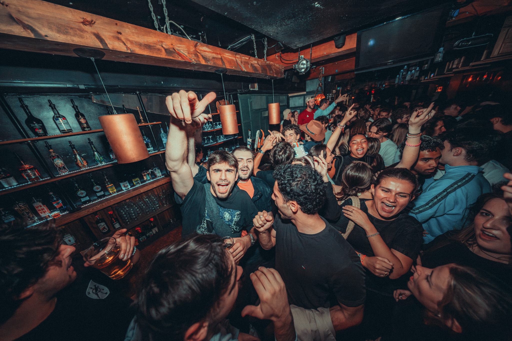
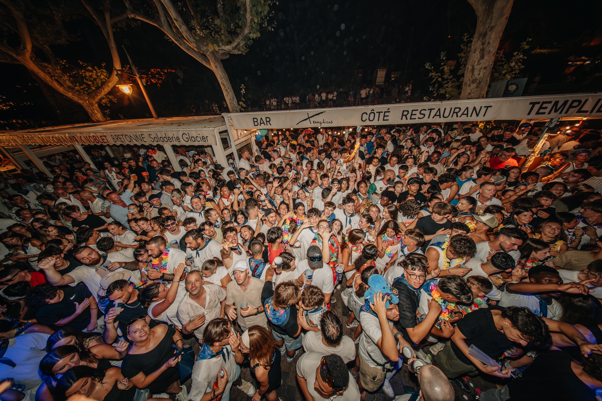
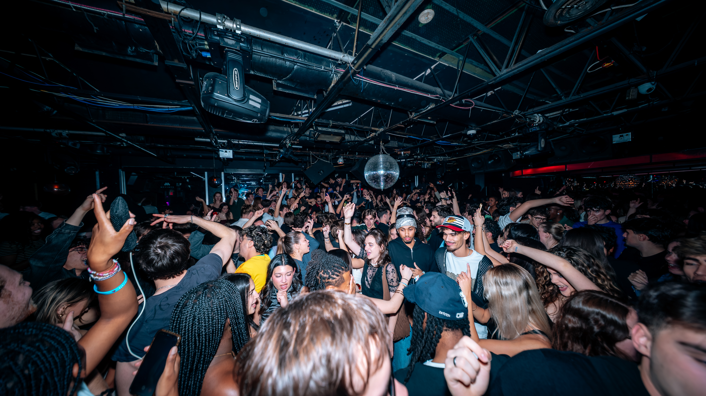
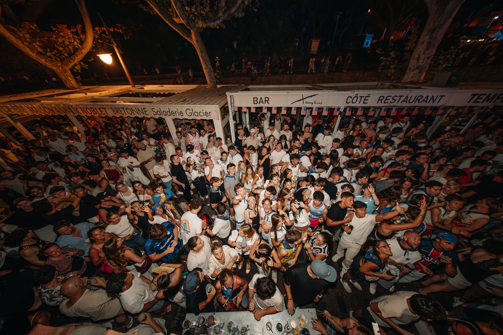

PHOTOGRAPHE · TOULOUSE
THOMAS ROLLAND
SONY A7V FULL FRAME
16–35MM & 70–200MM
01
ARTISTES
& DJ SETS
Portraits de scène.


02
NUIT
& CLUBBING










03
VOYAGE
NEW YORK
40.7128 N · 74.0060 W
NEW YORK · CLICK MARKER